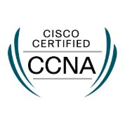

Professional Certifications

CERTIFIED
Cisco CCNA (200-301)
Routing, switching, WAN/LAN infrastructure, network security, automation, and programmability. Certified May 2026.

CERTIFIED
CompTIA Security+
Risk management, incident response, threat analysis, and security architecture fundamentals.

CERTIFIED
CompTIA Network+
TCP/IP, routing and switching, network troubleshooting, and infrastructure design fundamentals.

CERTIFIED
CompTIA A+
Hardware and software troubleshooting, system maintenance, and end-user technical support.
IN PROGRESS
AWS Solutions Architect Associate
Cloud architecture, networking, and infrastructure design on AWS. Building on prior AWS exposure from Charter platform migration work.